专注力小宇宙 1.51
隔离浏览器真实页面；成绩为测试数据。视频捕获帧率不代表设备渲染帧率。
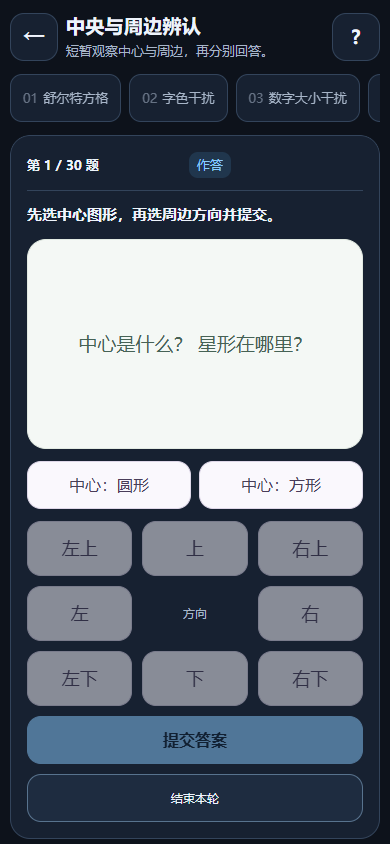
中央与周边辨认-1.51 串行双目标识别-1.51
串行双目标识别-1.51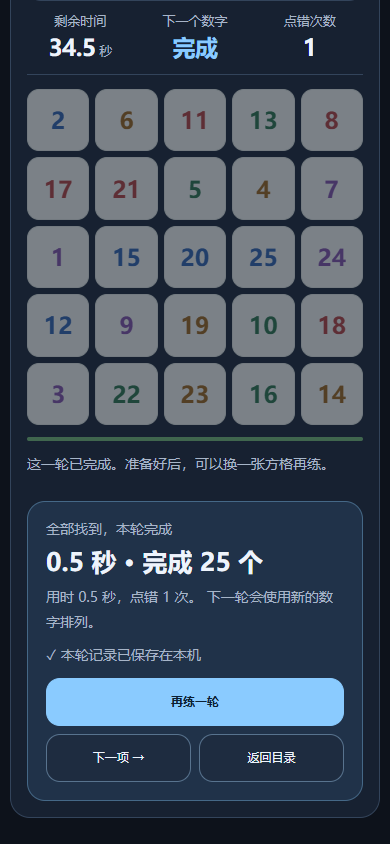
倒序数字搜索-1.51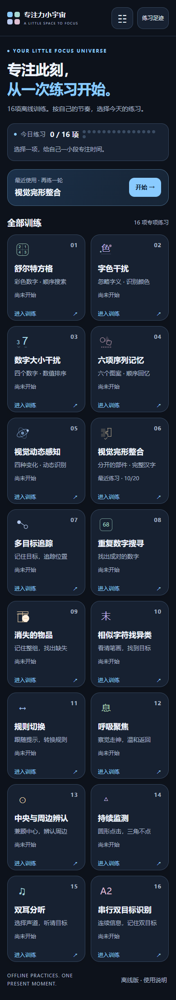
十六项目录-1.51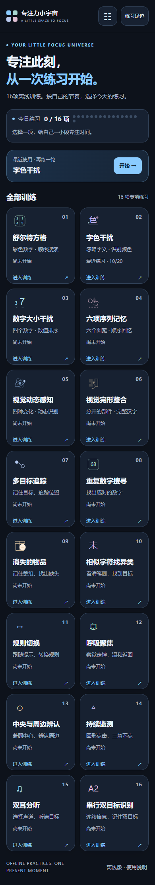
十项目录-1.51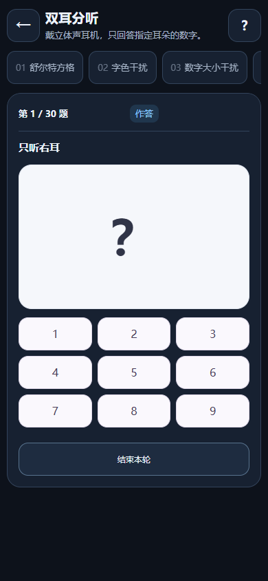
双耳分听-1.51 双耳声道确认-1.51
双耳声道确认-1.51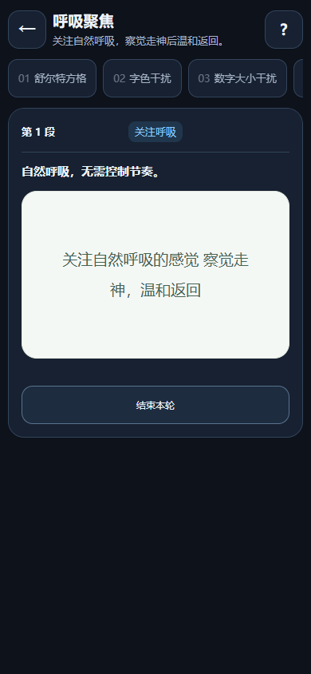
呼吸聚焦-1.51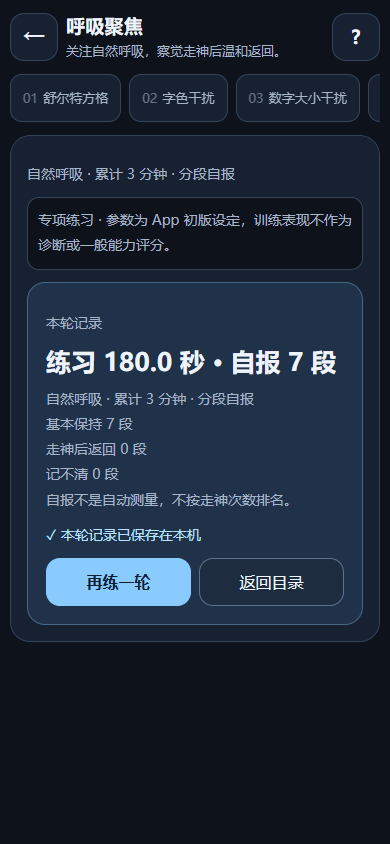
呼吸自报记录-1.51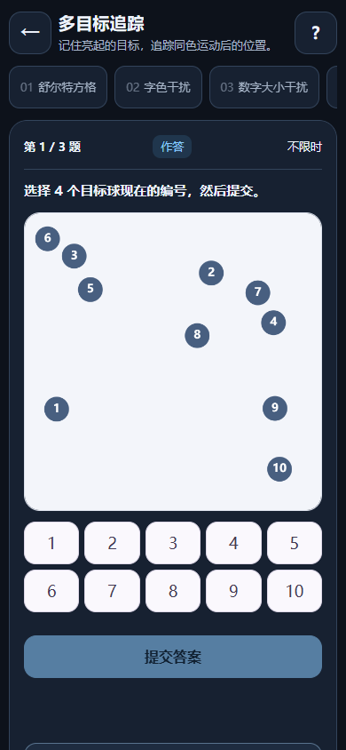
多目标追踪-1.51 持续监测-1.51
持续监测-1.51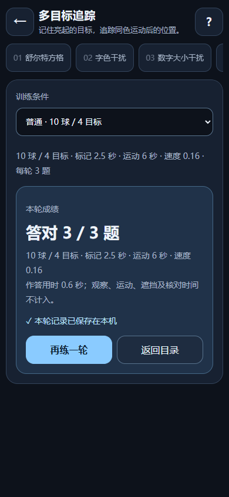
新增训练成绩-1.51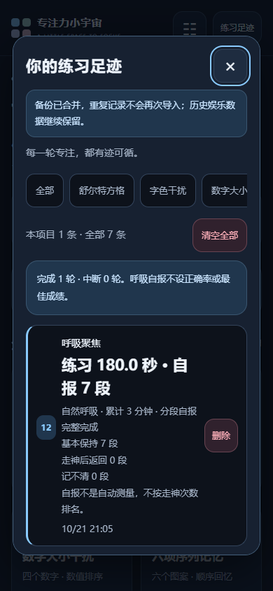
新增训练记录-1.51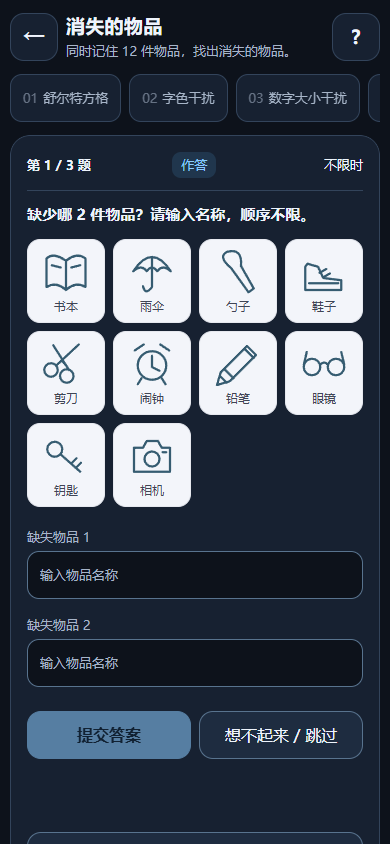
消失的物品-1.51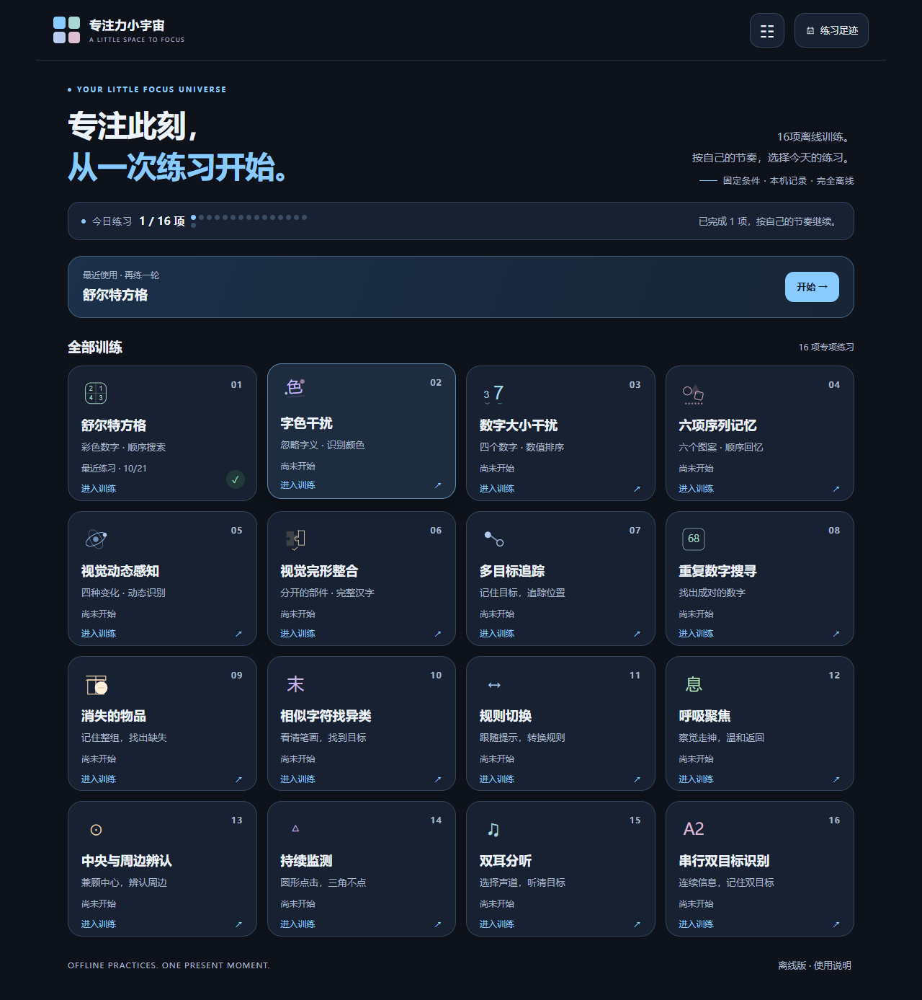
深色桌面悬浮-1.51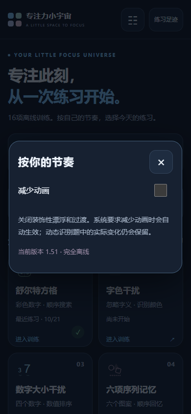
深色界面设置-1.51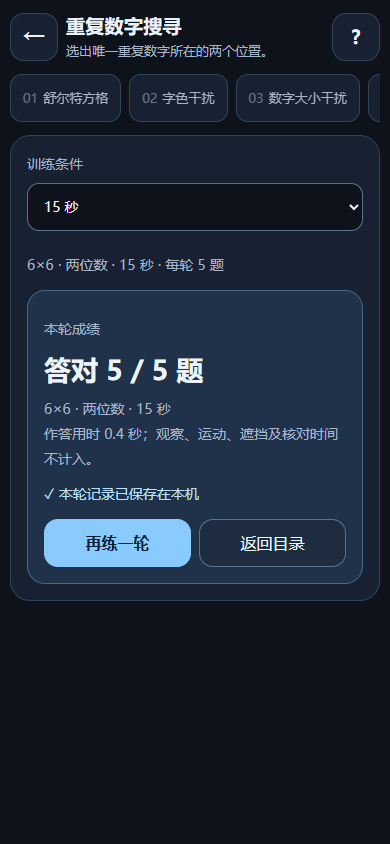
深色训练成绩-1.51深色训练目录-1.51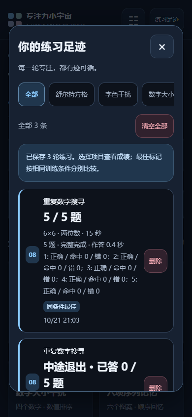
深色训练记录-1.51 深色训练设置-1.51
深色训练设置-1.51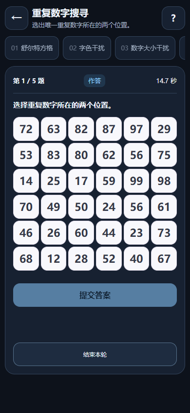
深色训练题面-1.51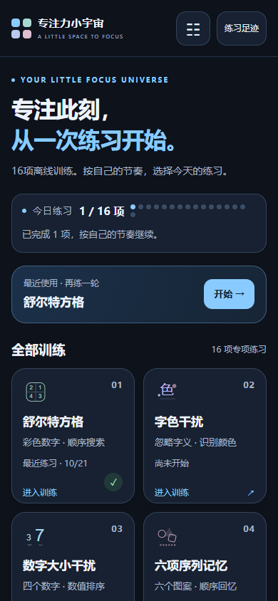
深色首页首屏-1.51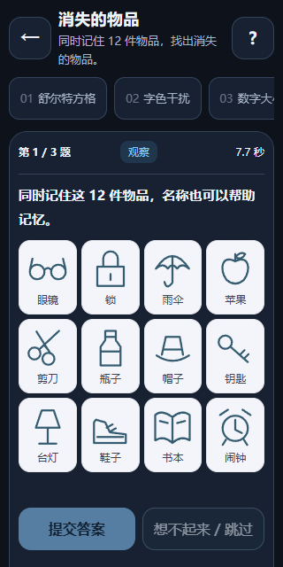
物品观察阶段-1.51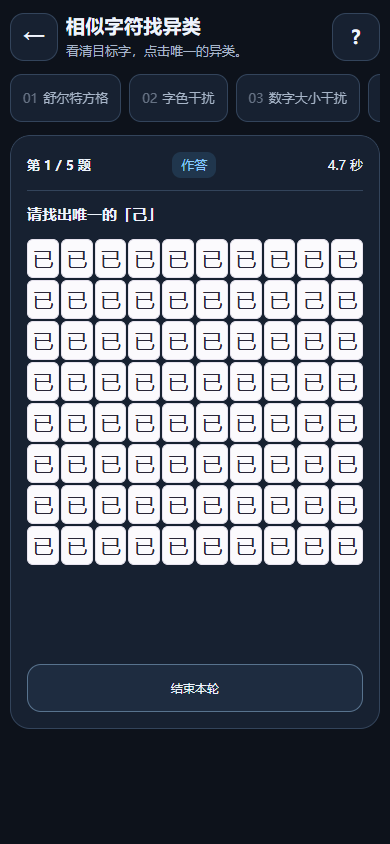
相似字符80字-1.51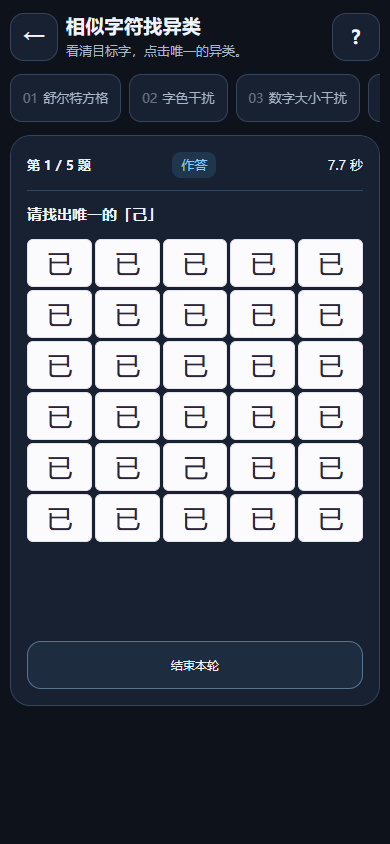
相似字符找异类-1.51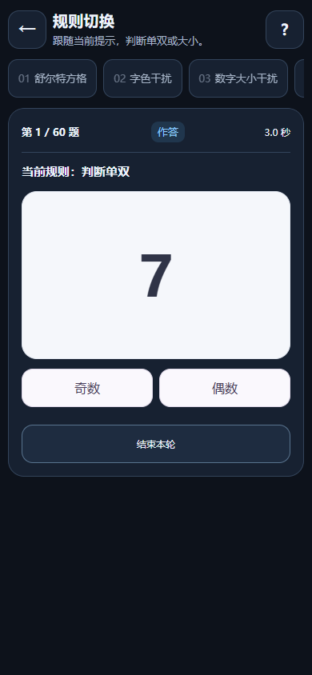
规则切换-1.51训练目录-1.51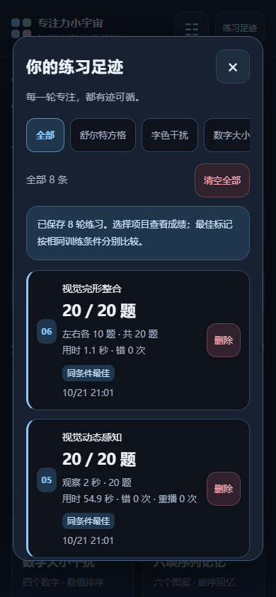
训练记录-1.51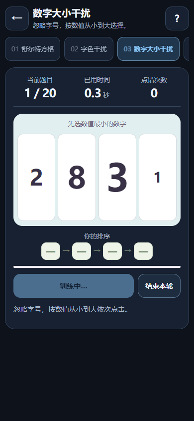
训练页-1.51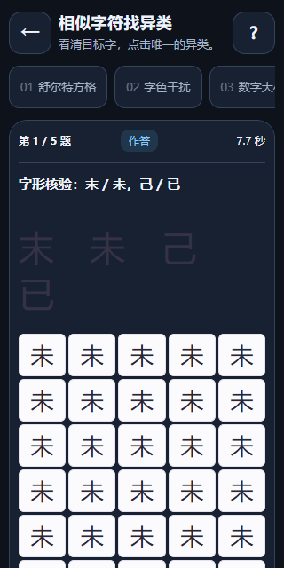
近形字字形核验-1.51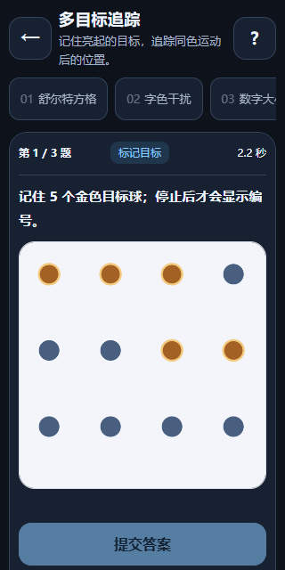
追踪标记阶段-1.51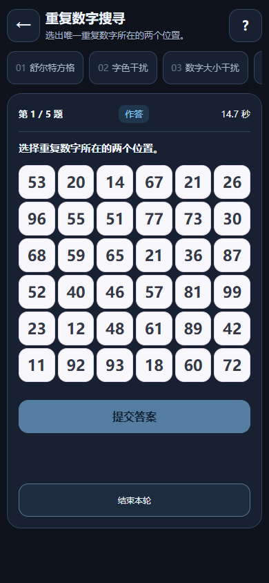
重复数字搜寻-1.51